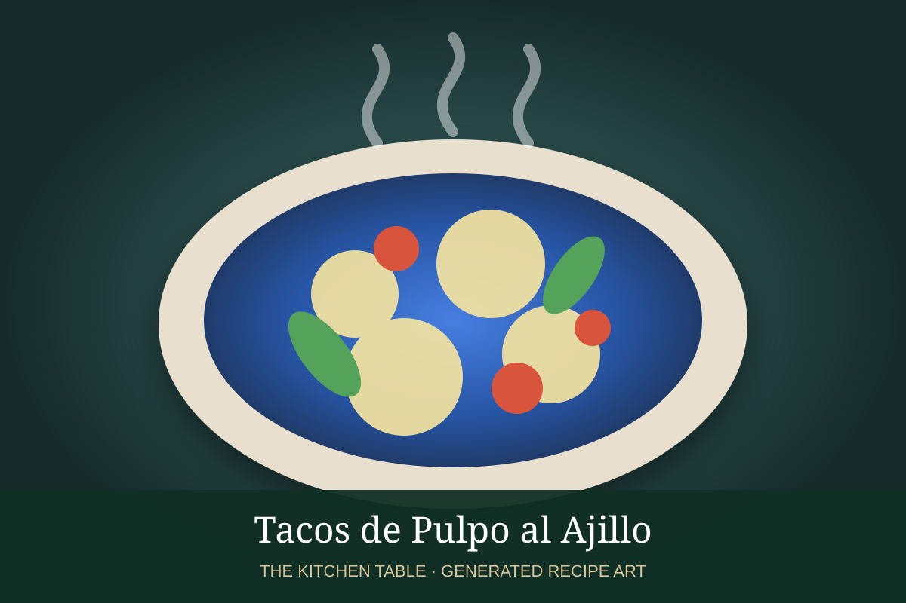

← Back to all recipes
SEAFOOD · MEXICAN
Tacos de Pulpo Enamorado
Tender octopus tossed in a creamy, citrusy tomato-onion dressing and served in tortillas with avocado and cilantro.
25 minMakes 10 tacos

Photo: Gastrolab
Ingredients
- 2 lb cooked octopus, chopped
- 1/2 cup mayonnaise
- 1/4 cup Mexican crema
- 2 Roma tomatoes, diced
- 1/4 red onion, diced
- 1 serrano, minced
- Juice of 2 limes
- Cilantro
- 10 tortillas
- Avocado
Preparation
- Mix mayonnaise, crema, lime, salt, and pepper.
- Fold in octopus, tomato, onion, serrano, and cilantro.
- Warm tortillas.
- Fill with pulpo enamorado and avocado.